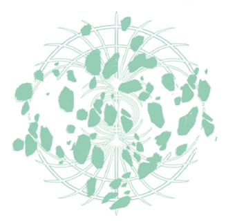

Buracos brancos são as regiões teóricas opostas do espaço: áreas de fluxo externo do espaço-tempo onde tudo é empurrado para fora a partir do ponto central.
Seria fácil se perder em uma toca de coelho aqui, mas eu acho que esta é nossa melhor aposta para entender por que há um Lorde de Ônix para o buraco negro e um Lorde de Alabastro para o buraco branco. Juntos, a atração de um buraco negro e o empurrão de um buraco branco fariam um buraco de minhoca e eu acho que esses seres de maestria gravitacional, como Astel e os lordes, são capazes de manipular essas forças livremente para criar esses buracos de minhoca.
São, é claro, esses efeitos que Radahn desejava exercer por razões pessoais, como afirma sua lembrança:
“O General Leão Vermelho empunhava poderes gravitacionais que aprendeu em Sellia durante sua juventude. Tudo para que ele nunca tivesse que abandonar seu amado, mas magro corcel.”
- Lembrança do Flagelo EstelarEntão parece que seu raciocínio inicial para aprender essa magia era para que ele nunca tivesse que desistir de seu cavalo, conforme ele crescia.
Na cinemática da história e em nosso conflito com ele, podemos ver que ele ainda está montando este cavalo comicamente pequeno. Obviamente, ele teria sido esmagado pelo grande peso de Radahn se não fosse pela magia gravitacional que ele emprega.
No entanto, ao final de sua tutela, parece que ele tinha um uso diferente para a magia, como aprendemos a seguir no feitiço Estrelas do Colapso:
“Uma técnica gravitacional dominada pelo jovem Radahn. ‘Eu te agradeço por tua tutela, pois agora posso desafiar as estrelas.’”
- Estrelas do ColapsoAs próprias estrelas! E, claro, ser capaz de manipular magia de puxar e empurrar permitiria a um ser de poder suficiente repelir as estrelas e travá-las no lugar. Como sabemos, isso tem dois efeitos principais. Primeiro, Radahn usa esse poder para manter a cidade de Sellia segura. Aprendemos isso no Monumento da Espada em Caelid:
“O Conflito do Flagelo Estelar / Radahn sozinho mantém Sellia segura / E permanece de pé, para estilhaçar as estrelas”
- Monumento da Espada, Castelo Juba Vermelha, CaelidRadahn desafiando as estrelas com seus poderes gravitacionais é, portanto, conhecido como o